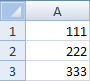
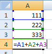
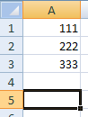
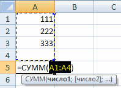
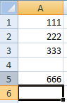

Функции в Экселе
Составляя таблицы в Excel, мы используем одни и те же приёмы и способы решения поставленных задач. Например, часто необходимо посчитать общую сумму значений или вычислить их среднее арифметическое. Вот для этого и нужны функции.
Функция – это некое готовое решение, при помощи которого можно произвести определённую операцию, решить ту или иную поставленную задачу.
Сейчас мы рассмотрим одну из наиболее популярных и часто используемых функций – суммировать (автосумму).
Суммировать (автосумма)
Откройте программу Microsoft Excel: Пуск → Программы → Microsoft Office → Microsoft Office Excel.
Введите в А1 число 111, в А2 — 222, в А3 — 333.
Нам нужно сложить эти значения. Конечно, можно воспользоваться стандартным способом: щелкнуть в какую-нибудь ячейку, напечатать знак =, нажать на A1, затем напечатать знак +, нажать на A2, снова напечатать +, нажать А3 и кнопку Enter. В итоге формула будет выглядеть следующим образом: =A1+A2+A3
Но ладно, если нужно сложить пару-тройку цифр, а когда их сотни?! Вот здесь и поможет кнопка «Автосумма».
Суммировать – это функция, при помощи которой можно быстро сложить числа.
Чтобы сложить значения в A1, A2 и A3 при помощи автосуммы, нужно кликнуть туда, где следует вывести результат. Лучше всего для этой цели выбрать ячейку под цифрами. Например, A5.
А теперь вызовем «Суммировать». Есть несколько способов, как это сделать, но самый простой – щелкнуть по значку сигмы на панели редактирования (вверху программы)
Посмотрите на введенные данные. Как только вы нажмете на кнопку сигма, они выделятся.
Это произошло, потому что для получения результата мы выбрали ячейку под цифрами. Эксель «понял», что именно эти цифры нужно суммировать. Но даже если бы он их не выделил, мы могли бы это сделать и сами – нажать на левую кнопку мыши и, не отпуская ее, обвести ячейки.
Нажимаем Enter на клавиатуре, чтобы данные сложились.
А теперь щелкаем по ячейке с полученным результатом и смотрим в строку формул.
Расшифровывается она так: суммировать значения с А1 по А4 включительно.
Кстати, эту формулу можно редактировать прямо в строке. Например, мне нужно поделить получившееся значение на два. Для этого в строке формул допечатываю /2. Получается следующее: =СУММ(A1:A4)/2